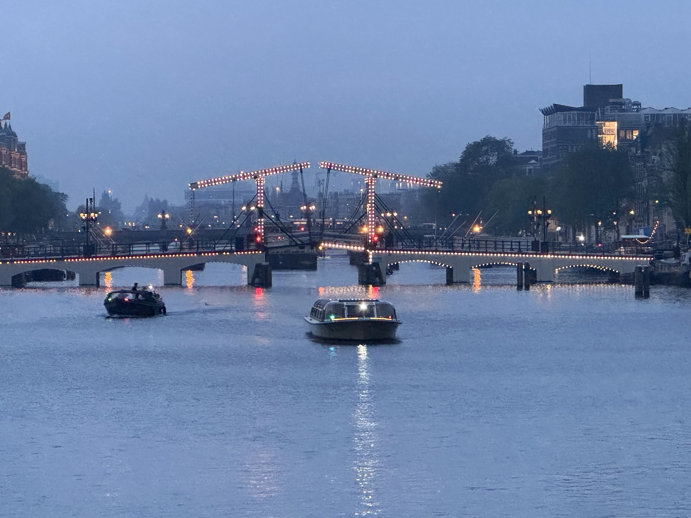

Amsterdam, 2024
The illuminated Magere Brug over the Amstel in Amsterdam, Netherlands, at blue hour, with boats on the river and city buildings beyond.

The illuminated Magere Brug over the Amstel in Amsterdam, Netherlands, at blue hour, with boats on the river and city buildings beyond.